| 日付 | 2015年1月2日（金） |
|---|---|
| メンバー | 家族（妻、長女・3歳、長男・1歳、父、姉一家） |
| アクセス | 車 |
今年の初詣は、世界最古の木造建築として名高い法隆寺に行く。
土産物屋の駐車場に車を停めて歩道を歩いていく。
道端では、拝観料が1000円から1500円に値上がりしたと、立ち話をしているおばさんがいる。
どうやら今年の元日から、事前説明なしに突然値上がりしたようだ。
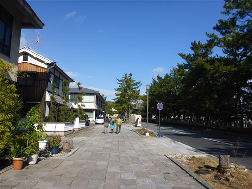
南大門。ここが法隆寺の玄関だ。門を潜って中に入る。
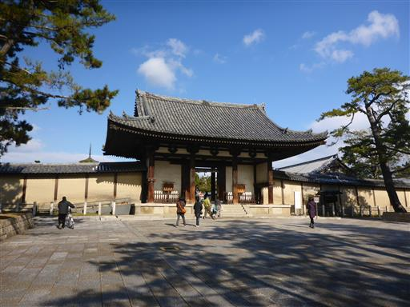
参道は広く、よく整備されている。

手水舎。ここで手を清める。
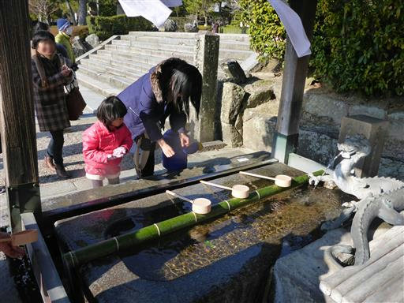
中門。左右に金剛力士像が立つ立派な門だ。
ここから先が有料となる。
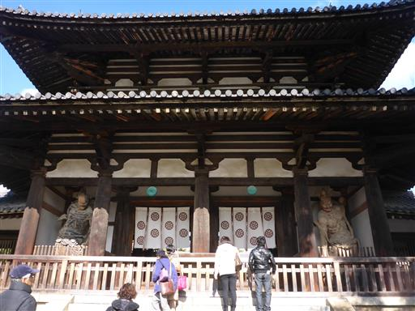
金堂。法隆寺を代表する建物。
中には釈迦三尊像が安置され、壁には壁画が描かれている。
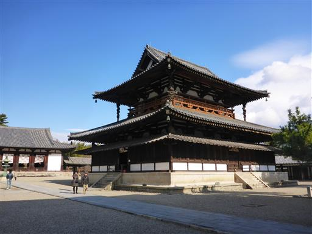
金堂の柱には龍の彫刻が施されている。
雪が少し降ってきた。とにかく寒い。
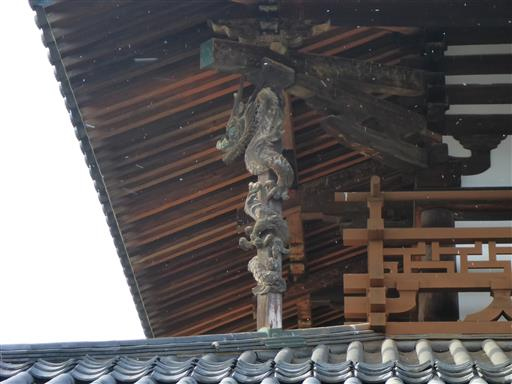
五重塔。スラリとした感じはせず、平べったい印象を受ける。
5段目の屋根の一辺は、1段目の屋根の一辺の約半分で、
他の五重塔と比べると上部が小さいらしい。
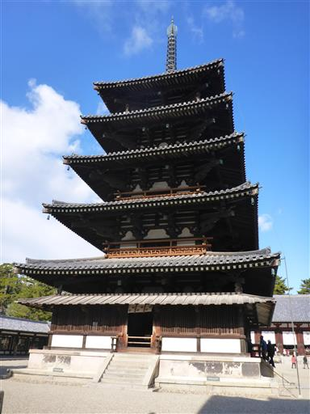
石段を上って中を覗くことはできるが、当然入ることはできない。
いつか五重塔の内部を見学してみたいものだ。
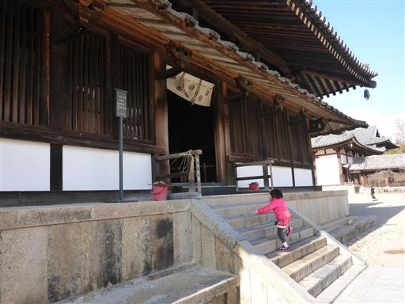
大講堂。一度焼失したが、990年に再建されている。
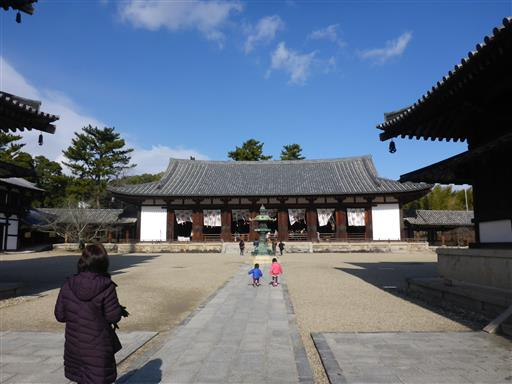
大講堂の奥に上御堂が建っているが、入ることはできない。
毎年11月1日～3日に限り堂内を公開しているようだ。
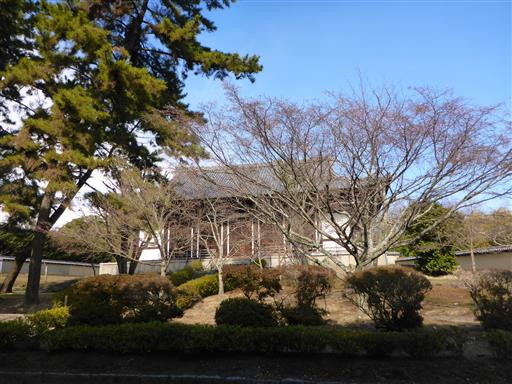
回廊を歩いて中門から外に出る。

鏡池。見ているだけで寒くなってくる。
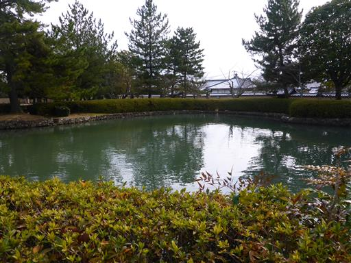
境内は広大で、建築物を見学しながら歩く。
大宝蔵院で公開されている寺宝を見学する。中が暖かかったので助かった。
時刻は12時近く。退屈だし、お腹は空くしで、子供たちはもうグダグダ。
まだ、西院伽藍しか見学しておらず、東院伽藍は見学していないのだが、昼食をとることにする。
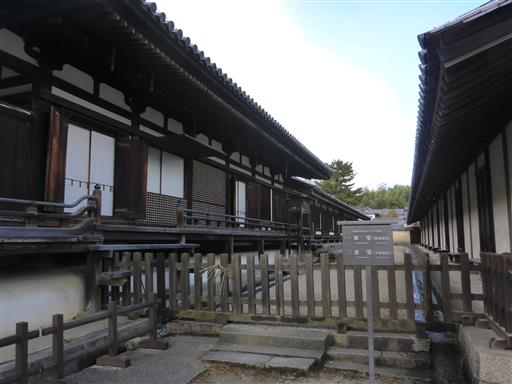
立派な木。特に標識など立っていなかったが、かなりの古木だ。
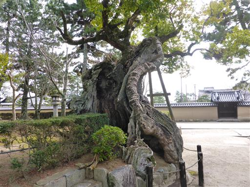
車を停めさせてもらった「かどや」で昼食をとる。
店員の愛想は良かったものの、まともに商売をしているとは思えない内容の店だった…
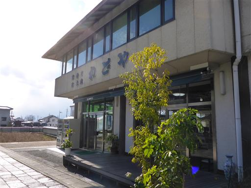